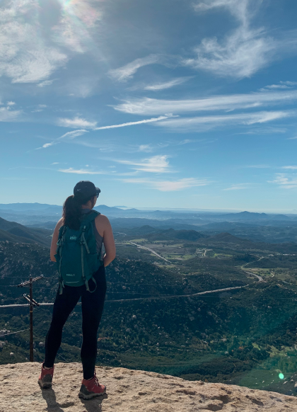

Hello!
My name is Jessica Cheng, but you can call me Jess! I’m from the Bay Area, but currently living in Los Angeles.
I’ve always been the creative type. I grew up in a traditional Chinese family setting. My father wanted me to follow in his footsteps and become a computer engineer. My summers were always spent in summer school (and not the fun kind)… but I always knew I’d end up a designer of some sort. Whenever there was a project due, I never missed the opportunity to take the creative route. My first job was in high school, teaching art. I was able to sneak a creative outlet under the pretense of it being a source of income. My parents pressured me apply to UCs or be a legacy at Utah State. That year, I won the annual logo contest for a local festival and I knew I’d choose to be an art major instead of computer science.
“Every child is an artist, the problem is staying an artist when you grow up.” - Pablo Picasso. Art school was great and I graduated with a BFA in Product Design. I interned at Anthropologie as a window display designer and spent another summer as an intern working on UI/UX design for a mobile application. I loved every minute of it, but for some reason I stayed working as a server after I graduated. I had an incredible amount of student debt, but the customer service industry paid me enough to be independent. I was living in the “real world” and I didn’t know how to put a creative spin on that. I worked hard and climbed my way to be Assistant Manager. But life has a funny way of nudging you back on track. I fell asleep driving, ran off the road, and crumpled my SUV into a Mini Cooper. Not only was that a wake up call (pun intended), it put my life into perspective.
Back to my roots. I started working at Staging company. Finally, for the first time in a long time, I was excited to be at work. I got to use my creative side, as well as implement customer service when working with real estate agents. I even got to pull out my management skills when I got promoted to Lead Designer. But something was still missing - although I loved my job, I wasn’t passionate about it. I wanted to design something that is lasting and concrete, and staging design was only tangible until the property is sold.
Everything happens for a reason. I started looking into things that I was passionate about and it boiled down to graphic design and UI/UX design. Based off the few projects I worked on, I couldn’t help but feel UI/UX design was a field that resonated with me. You always hear the phrase “there’s an app for that” and I liked the idea of finding technological solutions to everyday problems. I decided to continue my education to flow with the rise in technology. I came across Bloc and a week later I was enrolled. With my apprenticeship ending soon, I am definitely excited for this career path. I guess in the end, I did follow in my father’s footsteps and chose a career in tech; I just decided to, like always, take the creative route.